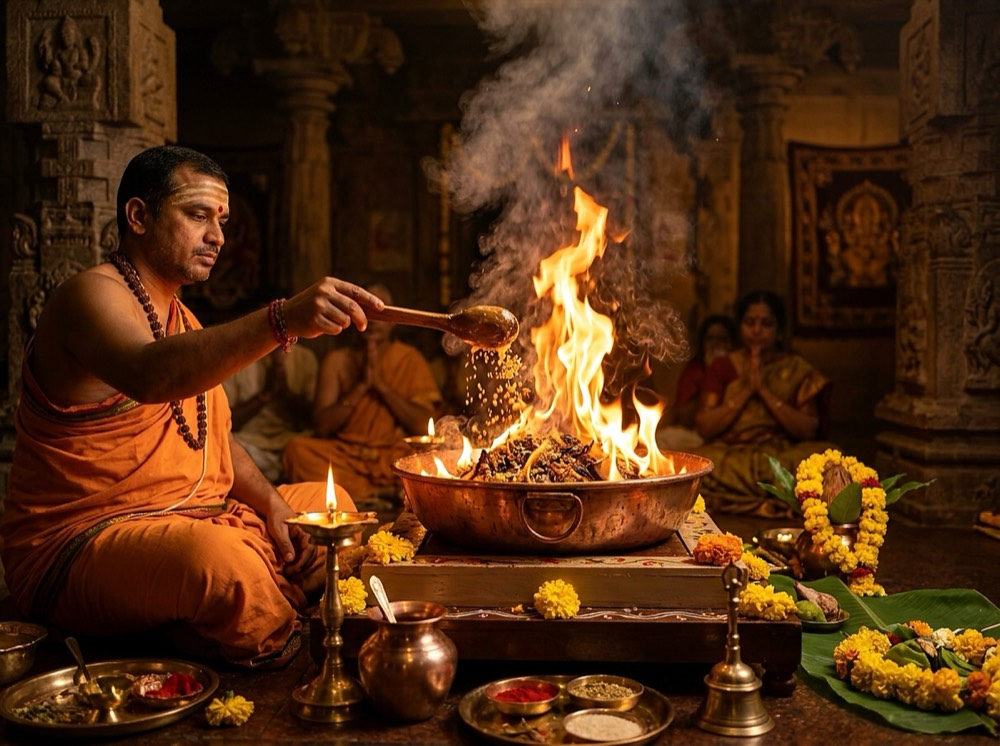

North Indian Pandit Ji in Bangalore: Preserving Authentic Vedic Traditions in Bengaluru

The North Indian Diaspora in Bangalore: Preserving Sanatana Heritage
Over the past two decades, Bengaluru’s economic vitality has welcomed hundreds of thousands of North Indian families from Uttar Pradesh, Bihar, Madhya Pradesh, Rajasthan, Delhi-NCR, Uttarakhand, and Jharkhand. As families settle into Bangalore's bustling neighborhoods—from Whitefield and Bellandur to HSR Layout and Electronic City—their desire to maintain spiritual continuity with ancestral rituals remains paramount.
Relocating across geographical zones, however, often introduces cultural and ritual challenges. Hindu traditions across India share the same timeless Vedic foundations, yet their Shastric paddhati (procedure), astronomical calendar calculations, ritual prasad offerings, and language expressions differ markedly between North India and Southern Karnataka. For a North Indian family, having an authentic North Indian Pandit Ji in Bangalore ensures that sacred family rites are executed exactly as they have been for generations.
Key Differences: North Indian Paddhati vs Regional Traditions
Understanding the distinction between North Indian Vedic rituals and local Karnataka traditions helps families select the appropriate priest for their milestone events:
1. Purnimanta vs Amavasyanta Panchang Systems
The foremost astronomical difference lies in the lunar calendar structure. North Indian traditions follow the Purnimanta calendar, where the lunar month ends on the Full Moon (Purnima). Conversely, South Indian and Deccan traditions follow the Amavasyanta system, where the month concludes on the New Moon (Amavasya). This affects festival observance dates, auspicious tithi boundaries, and shubh muhurat selections for Griha Pravesh and wedding ceremonies.
2. Havan & Agni Mukham Vidhi
In North Indian Shastric rituals, the invocation of the sacred fire follows the classical Navagraha and Vastu Havan paddhati with specific offerings of dried herbal samidha (mango wood), cow ghee, guggul, camphor, and unbroken grain (akshat). The Pradakshina (circumambulation) protocols around the holy fire during Vivah Sanskar strictly involve the seven sacred steps (Saptapadi) performed around the Agni Kund.
3. Sacred Bhog & Prasad Traditions
In North Indian ceremonies such as the Sri Satyanarayan Vrat Katha, the mandatory prasad is roasted wheat flour cooked in pure desi cow ghee with sugar and dry fruits, known as Atta Panjiri, accompanied by fresh Panchamrit (milk, curd, honey, ghee, and gangajal with tulsi). In local South Indian traditions, the offering is typically Kesari Bath or Sooji Halwa.
| Ritual Dimension | North Indian Shastric Tradition | South Indian Regional Tradition | Significance for Bangalore Families |
|---|---|---|---|
| Lunar Calendar | Purnimanta (Month ends on Purnima) | Amavasyanta (Month ends on Amavasya) | Ensures tithis and fasts align with ancestral traditions |
| Language of Katha | Sanskrit mantras with Hindi/Bhojpuri explanation | Sanskrit mantras with Kannada/Telugu explanation | Ensures family elders and guests fully grasp the katha |
| Wedding Pheras | 7 Pheras around Sacred Agni Kund (Saptapadi) | Mangalya Dharanam followed by 3 Saptapadi steps | Fulfills traditional North Indian Vedic marriage sanskar |
| Satyanarayan Bhog | Roasted Atta Panjiri, Panchamrit, Tulsi | Rava Kesari Bath, Panchamrutham | Maintains sacred flavor and ritual authenticity |
| Havan Samagri | Mango wood samidha, cow dung uple, havan shakal | Coconut shell, dry copra, local medicinal woods | Pure sacred fire combustion with pleasant aroma |
Core North Indian Ceremonies Officiated Across Bangalore
Pandit Ji Express provides Gurukul-certified North Indian purohits for the full spectrum of Vedic and cultural rituals:
1. Sri Satyanarayan Vrat Katha
The Satyanarayan Puja in Bangalore is the most beloved devotional ceremony for North Indian households. Our priests recite the complete Sanskrit chapters from the Skanda Purana, translating each chapter into fluent Hindi to inspire devotion among all family members.
2. Griha Pravesh with Vastu & Navagraha Havan
Moving into a new flat or villa requires the Shastric Griha Pravesh Puja in Bangalore. Rituals include threshold Dwar Puja, boiling of auspicious milk until it overflows, Navagraha Sthapana, Shodasha Matrika pujan, and an authentic Vastu Shanti Havan.
3. Traditional North Indian Vedic Vivah Sanskar
Our senior wedding purohits officiate traditional North Indian marriages across Bangalore marriage halls, resorts, and private residences. The ceremony includes Jaimala, Tilak, Kanyadaan, Gathbandhan, Panigrahana, Agni Pradakshina with 7 Pheras, Saptapadi vows, and Sindoor Daan as detailed in our North Indian Wedding Rituals Guide.
4. Regional Diaspora Festivals: Chhath Puja & Diwali Lakshmi Pujan
For the thriving Purvanchali, Bihari, and Maithil communities in Bangalore, our priests officiate regional milestones:
- Chhath Puja in Bangalore: Complete Shastric guidance for Nahay-Khay, Kharna prasad preparation, Sandhya Arghya, and Usha Arghya at Bangalore lakes (Ulsoor, Sankey Tank, Hebbal Lake, and Bellandur).
- Diwali Lakshmi-Ganesh & Kuber Puja: Authentic Shodashopachara pujan during Pradosh Kaal for residences, tech startups, and commercial offices.
5. The 16 Vedic Samskaras (Birth to Initiation)
Observing traditional sanskars away from hometowns is seamless with Pandit Ji Express:
- Naamkaran: Precise Nakshatra-based infant naming.
- Annaprashan: Auspicious first feeding of kheer with silver spoon.
- Mundan (Chaul Sanskar): First sacred haircut for purifying past-life karmas.
- Janeu (Yagnopaveeta): Sacred thread initiation with Gayatri Diksha.
Language & Dialect Comfort: Hindi, Bhojpuri, Maithili & Rajasthani
One of the primary reasons families choose Pandit Ji Express is linguistic comfort. Language barriers during sacred ceremonies dilute the spiritual experience. Our network features multi-lingual Vedic purohits who connect effortlessly with your family:
- Hindi Speaking Pandits: Pure, articulate Hindi narrative for all standard Vedic ceremonies.
- Bihari & Purvanchali Pandits: Familiarity with Bhojpuri traditions, Satyanarayan katha dialects, and Chhath Mahaparv customs.
- Maithil Pandits: Deep expertise in Mithila traditions, Panji Prabandh verification, and ceremonies conducted in the Maithili language.
- English & Kannada Fluency: For inter-cultural weddings and contemporary young couples, our priests explain the profound philosophy behind each ritual in fluent English and conversational Kannada.
Sourcing Authentic North Indian Samagri in Bangalore
Procuring specialized North Indian ritual supplies in Bengaluru can require exhausting trips to multiple markets. Essential items such as sun-dried cow dung cakes (Uple), seasoned mango wood samidha, pure havan shakal (a blend of 30+ herbs including guggul and jatamansi), sacred janeu threads, and gangajal are frequently unavailable in standard neighborhood stores.
Through our dedicated Puja Samagri service, Pandit Ji Express delivers pre-packaged, authenticated samagri kits straight to your home. Every item is verified for Shastric purity, freeing your family to focus entirely on devotion and hospitality.
Balcony & Apartment Havan Protocols for Bangalore Tech Hubs
Conducting havan inside modern Bangalore apartments requires sensitivity to indoor living environments. Senior purohit Pandit Shyam Sundar uses dedicated ritual protocols to ensure complete safety:
- Custom Pure Copper Kunds: Compact, stepped copper kunds engineered to radiate spiritual heat upwards while insulating the base.
- Zero-Smoke Samidha Selection: Seasoned dry mango wood and pure A2 cow ghee produce clean combustion, avoiding the heavy soot of wet timber.
- Natural Air Ventilation: Arranging the sacred seat near balcony doors or cross-breeze windows ensures natural fragrance dispersal.
Citywide Reach: Serving Bangalore’s North Indian Communities
Whether you reside in an IT corridor or a heritage neighborhood, our purohits travel directly to your residence across Bengaluru:
- Whitefield & Kadugodi: Serving gated communities along ITPL Main Road, Hope Farm, and Varthur Road.
- HSR Layout: Connecting with North Indian families across Sectors 1 through 7.
- Electronic City: Serving high-rise apartments in Phase 1, Phase 2, and Neeladri Road.
- Sarjapur Road & Bellandur: Officiating home pujas along the Outer Ring Road tech corridor.
- Marathahalli & Munnekollal: Fast doorstep priest arrival across bridge-side societies.
- North Bangalore (Hebbal & Yelahanka): Accessible from our primary center near Jakkur.
Transparent Dakshina & Authentic Vetting
At Pandit Ji Express, we believe in complete financial transparency. We do not participate in bidding models or arbitrary price escalations on puja day. Transparent dakshina benchmarks are established during your initial consultation based on ritual duration and samagri requirements. Discover more in our comprehensive Pandit Cost & Dakshina Guide.